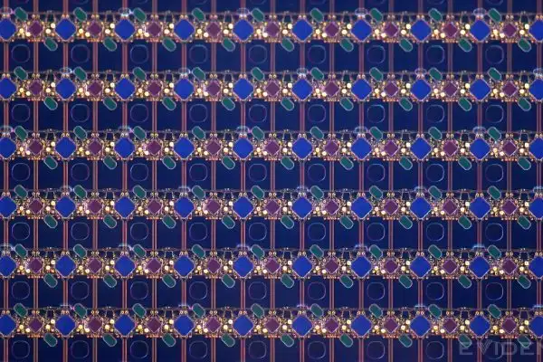
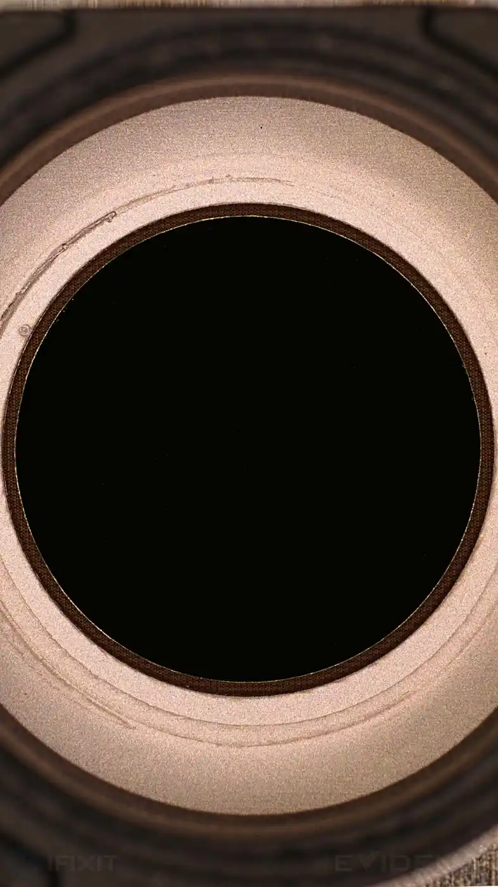

The full story.
How it actually works. What iFixit found. And the person behind it.
Invention of the Disappearing Camera
Orchestrating the Physics
To achieve an edge-to-edge canvas, the OLED matrix had to sit directly over the lens. But when you place a camera behind an active display, diffraction is inevitable. The light breaks.
Standard engineering tries to fight this physical reality, attempting to force the display to be perfectly transparent. System architecture dictates a different approach: if you cannot eliminate the distortion, you control it.
We didn't just build a lens and write a software filter. We co-designed the physical optical stack and the algorithmic restoration pipeline simultaneously. We engineered the display’s pixel matrix to yield and degrade the incoming light in a highly specific, mathematically predictable pattern. By intentionally shaping this distortion, we ensured the system’s point spread function (PSF) maintained optimal numerical conditioning.
We designed the hardware to hand the software a puzzle it was mathematically guaranteed to solve.
The Photographic Standard
A mathematically recovered image, however, is not the same as a beautiful photograph. The ultimate metric for this architecture was never just signal preservation — it was human perception.
Every layer of the pipeline was tuned against the rigorous standards of photographic aesthetics. We weren't just inverting a matrix; we were protecting skin tones, preserving natural micro-contrast, and maintaining the emotional resonance of the image. The technology solves the physics, but the architecture serves the art.
You cannot see it.
On September 20, 2026, iFixit published the teardown of the iPhone 18 Pro and Pro Max — and trained microscopes on the Face ID region. Their verified findings: the IR camera moved under the screen toward the upper-left; the opening is barely a dimmer circle; every other row of display pixels is absent above it; pixel density transitions around the edge — and an apparent IR-pass filter beneath the OLED creates an “eclipse” appearance.




Images: iFixit (cropped from the originals), used under CC BY-NC-SA 3.0
A precision note: on the 18 Pro Max, only the Face ID infrared camera moved beneath the OLED — the selfie camera and IR dot projector stayed in the central opening. On the iPhone Duo, the hidden FaceTime camera sits beneath the inner display.
Not a one-off.
In June 2015, I became a founding member of Apple’s Vision Products Group — the team that incubated the Apple Vision Pro — and went on to co-invent the foundational passthrough system (PCT/US2024/029534).
The invisible camera wasn’t luck. It was pattern.

Built for exactly this.
Four layers of training, converging on one idea: light as a design material.
- MysoreElectrical engineering undergrad, fourth of the year. Signal processing.
- IISc BangaloreMS in computer science. Graphics & visualization.
- MITPhD, mechanical engineering, 2013. Aerial robotics — and a drone-lighting cinematography project with Best Paper honors.
- CSAILPostdoc with Frédo Durand. Computational cameras.
The human behind the patents.

I’m a photographer with solo and group exhibitions at MIT, where I also taught photography. My guiding lens: “Art + Science + Product + human-centric products.”

What are you building?
I’m open to thoughtful conversations, collaborations, and advisory roles.
If you’re working on something the world doesn’t know is possible yet — start with hello.
Connect on LinkedIn